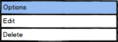
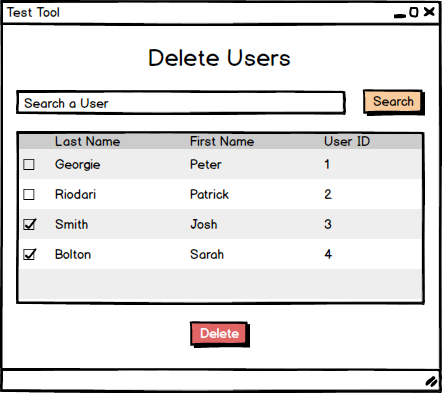
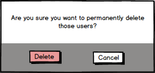

Deleting a user is another feature reserved only for the administrators of the Wrecking Ball Test Tool. This feature is only used for students who are no longer attending the school as students who are still enrolled need to use the test tool as long as they're still attending the school.
The administrator can reach this menu through the user database. Figure 1 shows the menu that appears to the screen if the user clicks the options menu.

Figure 1: Deleting a User Dropdown.
When the administrator selects all the users to be deleted, he/she clicks on the "Delete" button Figure 2.

Figure 2: User Marked for Deletion.
The system responds with the screen shown on Figure 3 which asks the administrator to confirm the action.

Figure 3: Confirmation.